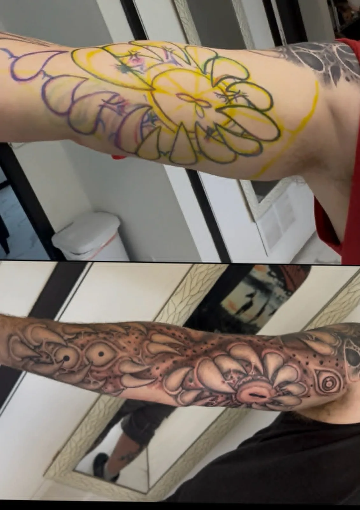

Organic forms, texture and depth — designs that move like they grew there.
Bio-organic tattooing blends natural textures — bone, sinew, shell, plant and alien forms — into compositions that follow the body's own structure. Done well, a bio-organic piece doesn't sit on the skin; it looks like it belongs underneath it.
Carlos approaches bio-organic work freehand-first: the design is built around your exact anatomy, so the flow lines, negative space and depth shifts track your muscle and movement.
New bio-organic portfolio photos are being added — follow the work in progress on Instagram, or book a consultation to see current projects in person.

New bio-organic pieces are added regularly — see the latest on Instagram or book a consultation to view recent projects.
Compositions mapped to your muscle structure so the piece flows naturally with movement.
Layered shading creates the illusion of dimension — forms that recede into and rise out of the skin.
Much of the design happens directly on the body, making every piece truly one of a kind.
Biomechanical leans into machine elements — pistons, cables, plating — under torn skin. Bio-organic uses natural forms: bone, tendon, shell, plant and alien textures. Many pieces blend both.
They shine on areas with strong natural contours — forearms, calves, shoulders, ribs and full sleeves — because the design uses your anatomy as its skeleton.
Largely, yes. After the consultation I draw key structure directly on your body so the flow matches your anatomy exactly, then refine from there.
Free consultation, in person or remote. Based at Koi Dragon Tattoos in Murray, Utah — booking clients worldwide.